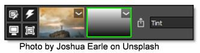

Masks
Masks allow you to limit the effect of a filter by revealing it only in white areas of the mask. White is on, black is off and gray areas in between represent a level of transparency.
Masks are displayed to the right of the image thumbnail in the Layers window and utilize a combination of on-screen and toolbar controls.